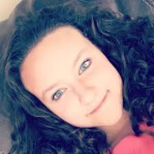

My my name is Bella Dugorepec. I am a Sophmore at Dublin High School and
strive to be a leader. I'm the oldest of four and am a role model to
my little siblings. My family and I are very athletic, we play sports from Karate,
soccer, swim, to volleyball and futsal. I am an outgoing person and I have made many friends
that rely and trust me. My future goals in life are to work in a feild of development and
have a well-supported family. Some fun facts about me are I am self taught on the piano, I have
been part of Girl Scouts for almost nine years, I have been playing soccer for eleven years,
and have been swimming for seven. In the past I've made the Freshamn soccer team, and the JV
swim team.
My greatest accomplishment so far in life would be making my parents proud with my
grades, sports, and mostly who I am as a person and how I have grown into a helpful and
kind young lady. My idol in life would be my mother becuase she is a strong, and independent
woman that always makes other people smile and she can befriend anyone and everyone.
I have always looked up to her like my older sister and best friend because she puts herself
out in the world and lives life to the fullest which is how I want to live my life as well.
Some of my favorite hobbies include art, history, music, and science. I love to learn about
the world and how it became from back when the egyptians ruled, or king and queens fought
to keep their kingdom. My most favorite part of learning history is seeing how the world
around me has evolved and changed life now then from that time area. I also do love they way
people build and make objects. I love watching or reading about how engineers put together certain
parts to make one huge project at the end. I also love when the build unique art or decor that
people look at in awe because of the beauty and quality.
My goals in life are to finish high school and head off to UCSB for my education.
After college I would like a job in a field including with computers or in a field with buisness management.
As a student I try to find these hobbies and include my family and friends in my everyday life.
I love to spend time with my siblings if it's just kicking a ball outside or plaing video games
with them. I love my family more than anything.